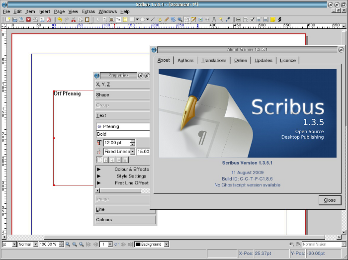

Il team di Scribus è molto grato a Paul Smedley per il suo impegno nella realizzazione delle versioni di Scribus per le piattaforme OS/2 ed eComStation.
Il team di Scribus inoltre desidera ringraziare la Serenity Systems e la Mensys BV per il loro sostegno nello sviluppo e nel collaudo della versione per OS/2 ed eComStation.
|  |
Per utilizzare Scribus su OS/2 ed eCS, i seguenti requisiti devono essere soddisfatti:
C:\OS2\DLL (OS/2) o in C:\ECS\DLL (eComStation).La versione di Scribus per OS/2 ed eCS non viene distribuita con un programma di installazione. Ecco come procedere: scaricate il file zip da Sourceforge (la versione per OS/2 ed eCS è il file zip con “OS2” nel nome) e scompattate l'archivio nella posizione che preferite. Poi entrate nella directory estratta SCRIBUS-1.4.x-OS2-date\scribus, dove “x” rappresenta il numero di versione di Scribus, e “date” è la data di creazione della versione di Scribus, ad esempio 20110128 (= 28 gennaio 2011) e fate doppio clic sul file scribus.exe. Potete anche lanciare Scribus dal prompt dei comandi.
Attenzione: dovete estrarre il contenuto del file zip in una partizione che permette l'uso di nomi di file lunghi. Il file system FAT16 non permette l'uso di nomi di file lunghi, mentre i driver per i file system FAT32, o anche NTFS, per OS/2 ed eCS sono, nella migliore delle ipotesi, sperimentali. Quindi la cosa migliore è usare un file system IBM nativo come HPFS (che è quello predefinito per OS/2 ed eCS) o JFS.
Come Scribus, Ghostscript non ha un programma di installazione. Basta scaricare ed estrarre il file zip dal link indicato sopra. Per configurare Scribus per l'uso di Ghostscript, aprite la finestra di dialogo File > Preferenze in Scribus, e andate alla scheda “Strumenti Esterni”. Sotto “Interprete PostScript” potete inserire manualmente il percorso dell'eseguibile di Ghostscript, oppure potete usare la finestra di dialogo per la scelta del file facendo clic su “Cambia ...”. Il nome dell'eseguibile è gsos2.exe, e si trova nella sottodirectory \bin, quindi il percorso del file dovrebbe essere simile a questo: X:\GHOSTSCRIPT-900-OS2-date\GS900OS2\bin\gsos2.exe.
Osservazioni su Scribus possono essere inviate a paul@smedley.info e tramite i normali mezzi di comunicazione di Scribus (IRC, mailing list, ecc). Le segnalazioni di bug dovrebbero essere inviate a http://bugs.scribus.net.
Se questo software vi piace, e desiderate sostenere lo sviluppo delle versioni per OS/2 ed eCS, prendete in considerazione la possibilità di fare una donazione via PayPal al link http://smedley.info/os2ports, oppure attraverso il negozio online di Mensys: http://www.mensys.net/os2ports.
Potete anche sponsorizzare o sostenere il progetto Qt4 per OS/2: senza il progetto Qt4 di Netlabs, questa versione non potrebbe esistere!